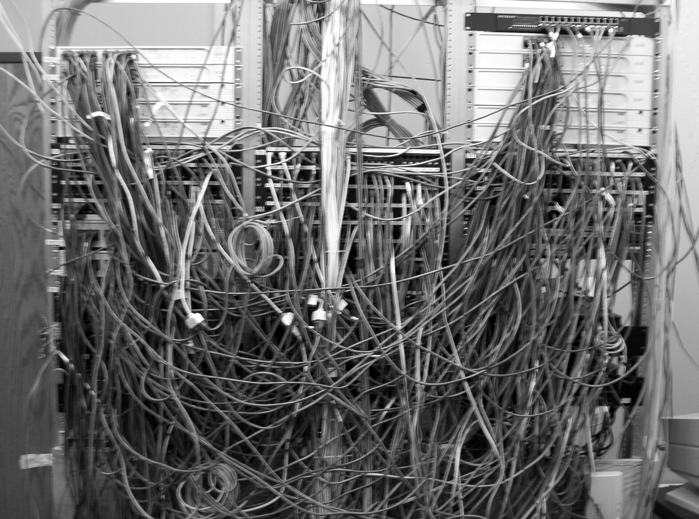
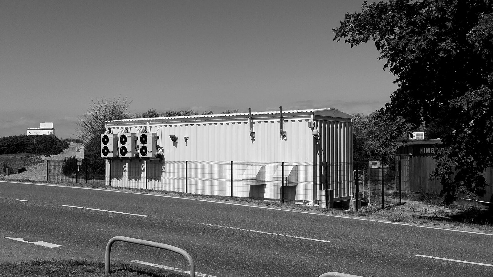
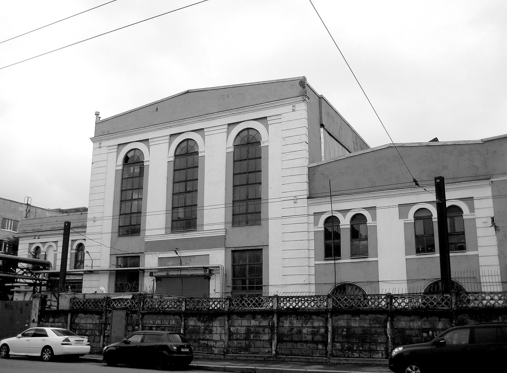
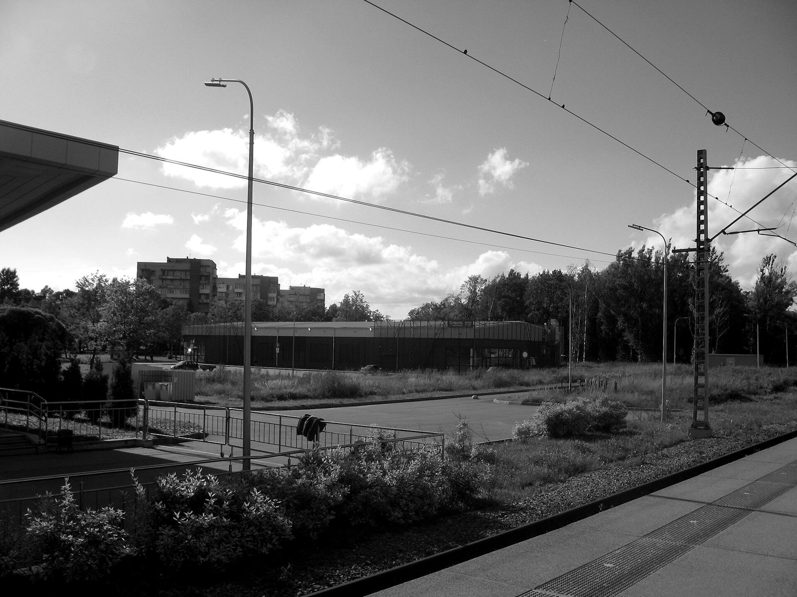

On 11 November 2008, the most effective action ever taken against the global spam economy was carried out by two telecom carriers cancelling a customer. McColo, a hosting company in San Jose, California, had spent years renting servers to the operators of the world's largest spam botnets. Nobody arrested anyone. Its two upstream carriers, Global Crossing and Hurricane Electric, simply stopped carrying its traffic after a reporter showed them what it was carrying. Within a day, by several independent measurements, global spam volume fell by roughly two-thirds. Confirmed reporting
The criminals were not touched. Their botnets were not touched. What was touched was a line in a routing table, and the entire industry that depended on that line went quiet. It recovered, eventually, elsewhere. But for a few weeks in late 2008 the world got a clean look at a fact that the ransomware economy would prefer you not think about: the whole enterprise sits on rented metal, and someone else owns the connection.
This series is about that connection. Our framework holds that the ransomware ecosystem rests on three dependencies: the money, the metal, and the krysha, the roof of active state protection. We have written about the money. We have written about the roof. The metal, the bulletproof hosting layer, is the one that gets described in a sentence and then skipped. This is the first of several dispatches that will not skip it. Part 1 does three things: says what the product actually is, shows why nothing above it works without it, and explains why the roof, of all things, cares about hosting.
The product
Start with the name, because the name is the first lie. The English term is "bulletproof hosting," which sounds like a technical property, as though the servers were somehow hardened. They are not. The Russian term is more honest: абузоустойчивый хостинг, literally "abuse-resistant hosting," where абуз means an abuse complaint. What the product resists is not bullets. It is email. Confirmed reporting
Every legitimate hosting provider on earth runs an inbox, usually called abuse@, where victims, researchers, and police send notice that a server is doing something it should not. A normal provider reads that inbox and acts on it. A bulletproof provider sells the guarantee that it will not. That is the entire product. Everything else, the crypto payments, the fake identities, the servers in convenient jurisdictions, is packaging around one promise: the abuse@ inbox at this company is decorative.
The industry knows this looks bad in print, so it has spent fifteen years finding softer words. On the clearnet the same service is sold as "DMCA-ignored hosting," "offshore hosting," "privacy hosting," "anonymous hosting," and, our favorite, "DDoS-resilient hosting," which is true in the way that a getaway car is fuel-efficient. There are ranked consumer review sites for it. One Russian listing, updated in April 2026, ranks seventeen abuse-resistant hosts "for clients from Russia," the way a consumer guide ranks kettles. Confirmed reporting On the forums where the real customers shop, XSS and Exploit, the sellers drop the euphemism and say "bulletproof" or "offshore," deal through Telegram and Jabber, and sort themselves into tiers: cheap boxes good for scanning and brute force at the bottom, providers who own their own racks and openly ignore Spamhaus in the middle, and at the top the operators holding their own address allocations and running fast-flux networks. Credible reporting
The oldest advertisements are the clearest. In August 2010, a user called triplex560, later identified by Intel 471 and by three governments as Alexander Mishin of Barnaul, posted the earliest known advertisement for what became ZServers. Confirmed reporting
+ Allowed: Drop projects, Exploits, Trojans, Botnets, Phishing, Satellites, adware, tds, etc.
+ Prohibited: Spam, fraud, pornography."
A year later, in 2011, the operator known as Yalishanda, whom the United States would indict in 2026 as Aleksandr Volosovik of Media Land LLC, was running his own version of the same list on Exploit: ordinary sites, doorway pages, adware, warez, pharma, spyware, exploits, Zeus banking trojans, all allowed. "Passive SPAM is allowed." Outgoing email spam, forbidden. By 2025 the newer entrants had dropped even the pretense of house rules. A forum advertisement for the Bearhost brand, recovered by KrebsOnSecurity that February, read: "If you need a server for a botnet, for malware, brute, scan, phishing, fakes and any other tasks, please contact us. We completely ignore all abuses without exception, including SPAMHAUS and other organizations." Confirmed reporting
Then there is the corporate register, where the product is described very differently. Aeza Group, a Saint Petersburg company that OFAC would designate in July 2025 for hosting the Meduza, Lumma, and RedLine infostealers, the BianLian ransomware operation, and the BlackSprut darknet drug market, never used the word bulletproof in public. Its own promotional thread on a mainstream hosting forum advertised Ryzen processors, sixty-second activation, anti-DDoS on every plan, and payment by bank card, e-wallet, or crypto, from about five euros a month. The bulletproof property was advertised one level down, by resellers, to the end customers who wanted it. Confirmed reporting When a European investigative outlet asked Aeza's chief executive, Arsenii Penzev, how the company handled complaints, his answer was a small masterpiece of the form: "If we receive a complaint from Roskomnadzor, we forward it to the client. That is where our mission ends." (Roskomnadzor is Russia's internet regulator.) Credible reporting
The rate card
The second surprise, after the name, is the price. There is a persistent assumption that criminal infrastructure must be expensive, that indifference is a premium good. It is not. It is a commodity, and it is priced like one.
Five euros a month buys a server that will not be turned off. The fast-flux service that made a ransomware gang's leak site untraceable to a fixed origin, cycling its addresses every few minutes, ran a few hundred dollars. At the top end, a large crew was quoted four thousand dollars by Media Land for each extra ten gigabits of pipe. That is real money for a hosting bill, and pocket change against the ransoms that pipe was moving. Confirmed reporting The economics of the metal layer are the economics of a utility: low unit prices, high volumes, and a customer base that cannot switch off the service and stay in business. Which is the next point.

The plant · nobody is reading the abuse inboxThe substrate
Pull the hosting out from under a ransomware operation and see what is left. The command-and-control servers that receive check-ins from infected networks are gone. The affiliate panel where the crew's contractors build their payloads and track their victims is gone. The negotiation portal where the victim is invited to chat is gone. The leak site, the countdown timer, the staged data release that makes the extortion work: gone. The stealer-log market the initial access came from, the forum the affiliate was recruited on, the loader botnet that delivered the payload, the mixer the ransom will go through, all of it runs on rented servers, and the servers have to be somewhere a takedown request will not reach. Confirmed reporting
Our Observatory tracks the ecosystem as a dependency map. Of everything on it, bulletproof hosting is the one node that every other node with a persistent online presence touches. A crypter or a negotiator is a service a crew buys when it needs one. Hosting is not a purchase of that kind. It is the floor everything else stands on. The Bulletproof Hosting node is rated critical and hard to replace for that reason, and the rating is if anything conservative. Analyst inference
The diagram carries the argument the rest of this series will make. Everything criminal is above the bar. Below the bar are two things that are perfectly legal and mostly Western: the transit carriers that connect a hosting network to the rest of the internet, and the regional registries that hand out the address space it announces. A bulletproof host is bulletproof toward its customers' victims. Toward its own suppliers it is a customer, and a customer can be cut off. That was the McColo lesson, and it is why, at the end of this dispatch, the question turns to where the metal is physically kept and who it answers to.
Where the metal actually is
The reflex is to picture a Russian bulletproof host as a basement in Saint Petersburg. Some of it is. Media Land LLC's owned data center, Data Center Kirishi LLC, sits in a town of that name in Leningrad Oblast and was sanctioned under its own name in November 2025. Confirmed reporting But the surprising finding of the past two years of enforcement is how much of the metal was never in Russia at all.

Cable landing station, Baltic coast · the pipe the host rentsWhen Dutch police moved against ZServers in February 2025, two days after the American, British, and Australian sanctions, they seized 127 servers in a single Amsterdam facility. The company had marketed itself from Barnaul, in Siberia, for fifteen years; its Western customers were being served from the Netherlands through a British shell partnership that existed, in the words of the UK designation, "to support and obfuscate" the Russian parent. Aeza's European footprint ran through a German upstream, aurologic, with resale of Hetzner capacity on top, and its corporate chain reached through a UK company, then a second UK company, then Serbian and Uzbek shells once the first ones were designated. Media Land, per the July 2026 US indictment, operated infrastructure in Finland, the Netherlands, and the United States alongside the Russian core; one of its principals had told a ransomware customer in 2024 that the Russian servers were "all our own: our own data center, our own hardware," which turned out to describe the part of the estate that Western process could not reach, not the whole of it. Confirmed reporting
The mechanism is the same in each case and it is the thing to understand about the modern metal layer. The bulletproof host does not connect its criminal customers directly to the internet. It rents capacity, or address space, or transit, from a legitimate provider in a legitimate jurisdiction, and it sells that capacity onward to people the legitimate provider would never knowingly serve. The criminal rents from the bulletproof host, and the bulletproof host rents from a legitimate carrier that never sees the criminal's name. Reseller chains, prefix swaps, and freshly registered shell companies each add one more layer of paper between the abuse complaint and the person who could act on it. Recent tracking research describes the sector moving away from big monolithic bulletproof networks and toward exactly this: infrastructure distributed across resellers and mainstream providers, harder to see because it no longer looks like a bulletproof host at all. Credible reporting
So the abuse@ inbox is decorative, but there is a second inbox, at the upstream carrier, that is not. That inbox is where the McColo lever lives, and the record of the past twenty months is largely a record of governments trying to reach it with sanctions instead of a phone call.
The scoreboard so far
Four providers have now been designated by Western governments in a period of about eighteen months. Part 2 of this series is about what happened next in each case, so here it is only a scoreboard.
The status lines tell the story. Four designations, one indictment, two physical raids, more than nine hundred servers carried out of Dutch buildings, and not one of the four networks is confirmed offline. Stark Industries is the purest specimen: its operators moved the main autonomous system to a freshly created company four days before the EU announcement, which requires either clairvoyance or a copy of the list, and reappeared within weeks under a new Dutch entity as THE.Hosting, a name that manages to be both a rebrand and a shrug. Credible reporting Aeza's founders were arrested, but in Russia, and not for any of this: the charges concerned the BlackSprut drug market, a narcotics case, and the company's hosting business carried on under new directors whom Treasury then had to designate separately in November. Media Land now holds what may be the most complete enforcement stack ever assembled against a hosting company, four sanctions regimes, a federal indictment, and a ten-million-dollar bounty, and continues to announce every one of its address blocks. Confirmed reporting
None of that is surprising once you have the diagram. Sanctions reach the money; they do not reach the routing table. The metal stays up until the upstream carrier acts, and the carriers, so far, have mostly been asked politely. Part 2 is about the exceptions, and about why the Dutch keep being the ones who show up with a van.
Why the roof needs the metal
Here is the part that belongs to this publication and not to the vendor reports. Look again at where the four providers were registered rather than where their servers sat.

Saint Petersburg, industrial zone · two of the four are registered hereAeza Group LLC is a Saint Petersburg company with a Russian tax number, three founding shareholders of record, and a registered office. Media Land LLC was registered in Saint Petersburg in October 2015, and its owner, per the US indictment, used his real name in a company filing while running the Yalishanda brand on the forums for a decade. ZServers operated from Barnaul for fifteen years under an administrator whose identity researchers reconstructed from Russian courier and social-media databases. These were not shadows. They were registered legal entities with named directors, filing with the Federal Tax Service, holding autonomous system numbers, employing staff, and in Media Land's case owning an immovable data center in a town whose name appears on the sanctions list. Confirmed reporting
The Roof Has Windows established the legal position. Any Russian network holding an autonomous system number falls inside the class that the state's surveillance order of 2026 addresses directly, and inside a regime that has obligated Russian networks to give the security services technical access since 1995. A bulletproof host operating from Russia is not hiding from the Russian state. It is wired into it by law, on networks the FSB queries rather than requests. When such a company runs for four years, or ten, or fifteen, hosting infrastructure aimed at Western victims, and the only domestic legal trouble it ever encounters is a narcotics charge, the explanation available to the tolerance theory is exhausted. The state did not fail to notice a registered company with a tax number. Analyst inference
Two details from the record put a finer point on it. When a participant on a mainstream hosting forum complained in 2024 that an Aeza reseller was running abusive servers on Aeza hardware, he reported that Saint Petersburg police told him, in effect, that "in Russia it is not forbidden to keep such hosting." Credible reporting And when the United Kingdom sanctioned Aeza, its foreign office stated that the company had provided bulletproof hosting to the Social Design Agency, the Kremlin-directed operator of the Doppelganger disinformation campaign, an entity "tasked and funded directly by the Russian State." Confirmed reporting Taken together: the hosting company that Treasury designated for serving ransomware and infostealers was also, per an allied government, a supplier to a state information operation. The roof was not merely over this provider. The roof was a customer.
The counter-case is Stark Industries, and it is instructive precisely because it is different. Stark's operators were Moldovan, its companies were British and Dutch and Moldovan, and its metal sat in Dronten and Almere and Enschede. The EU listed it for enabling Russian state-aligned operations, and it behaved exactly like the Russian providers under sanctions: preempt, rebrand, carry on. But when Dutch investigators finally walked into the buildings in May 2026, they walked out with eight hundred servers and two men in custody. That has never happened to Aeza, Media Land, or ZServers inside Russia, and on the present evidence it never will. The difference is not the customers or the conduct. It is which roof the metal sat under. Analyst inference

Kirishi, Leningrad Oblast · a sanctioned data center company is named after this townThat is why the metal belongs in a publication about the krysha. The money can be laundered anywhere and the crews can be anywhere with a laptop. The metal is the one dependency that has to be somewhere, on a rack, with a power bill and a landlord and a legal jurisdiction, and the crews that matter most have chosen to keep the core of it inside the one jurisdiction that will not act. Every other layer of the ecosystem is protected by the roof indirectly. The metal is protected by it directly, physically, at a fixed address. Which also means the metal is where the roof's protection can be measured: count the servers seized in Russia against the servers seized in the Netherlands, and the number on the Russian side is the policy.
The money, the metal, the krysha. Part 1 has argued that the middle term is a commodity, that it underpins everything, and that its Russian core survives on protection rather than on cleverness. The rest of this series takes that argument to the individual providers, one at a time, and looks at what happened when each of them was finally named.
Part 2: why sanctions keep missing. Four designated hosts, four rebrands, and the one lever, at the upstream carrier, that has been pulled only once.
Sourcing & confidence
This dispatch draws on US Treasury, Council of the European Union, and US Department of Justice designation and charging documents; the UK Foreign Office designation statements; Dutch FIOD statements as reported; and threat-intelligence reporting from Intel 471, Silent Push, Recorded Future, GreyNoise, Censys, Chainalysis and OWN Security, cross-checked against the Observatory's own provider profiles and the EDP bulletproof-hosting module. Forum advertisements are quoted as translated and reproduced by the cited researchers. Network status claims are dated to the last point we could confirm them and are not claims about the present day. Prices are as advertised, in the currency and period the original stated.
Confirmed · multiple independent sources, including official designation, register, or indictment language.
Credible · single strong source or consistent reporting, not yet officially confirmed.
Analyst inference · End Krysha's own assessment, drawn from the evidence above.
- McColo: The Register, 12 Nov 2008; summary of the spam-volume reports.
- Terminology: OWN Security, 50 Shades of Bulletproof Hosting (forum tiers); vc.ru ranking of 17 abuse-resistant hosts, Apr 2026; Censys, Hiding in Plain Sight, 3 Feb 2026 (reseller and distributed model, THE.Hosting).
- ZServers: OFAC, 11 Feb 2025; 2010 advertisement and operator identification via Intel 471 (Feb 2025); Dutch seizure of 127 servers as reported by Dutch National Police, Feb 2025.
- Aeza: OFAC, 1 Jul 2025; OFAC, UK, Australia joint action, 19 Nov 2025 (Hypercore, Serbian and Uzbek entities); Silent Push, 24 Jul 2025 (AS210644 to AS211522 migration from 20 Jul); Penzev interview and reseller reporting via VSquare and investigace.cz (2024); UK FCDO designation statement on the Social Design Agency relationship; LowEndTalk promotional thread (2024) for prices and the police remark.
- Media Land: OFAC, 19 Nov 2025; Council of the EU, 13 Jul 2026; US DOJ, 14 Jul 2026 (42 victims, 21 states, $62M, fast-flux and proxy services, $10M reward); 2011 advertisement via KrebsOnSecurity, Jul 2019; BlackBasta chat leak (2024) for bandwidth pricing.
- Stark Industries: Council of the EU, 20 May 2025; Recorded Future, One Step Ahead (ASN transfer of 16 May); KrebsOnSecurity, May 2026 (FIOD raids of 18 May, 800+ servers, two arrests); RIPE NCC RIPEstat routing state as compiled in the Observatory profile, 6 Jun 2026.
- Bearhost advertisement: KrebsOnSecurity, 28 Feb 2025; ASN attribution via Intrinsec, Nov 2024.
- Photography: racks in a decommissioned bunker, Oberreichenbach, by COMback (CC BY-SA 4.0); wiring closet, public domain; C-Lion cable landing station, Rostock, by Dirk1981 (CC BY-SA 4.0); Arsenal plant, Saint Petersburg, by GAlexandrova (CC BY-SA 4.0); Kirishi street, by Ekaterina Borisova (CC BY-SA 4.0). All via Wikimedia Commons, converted to monochrome and tinted; the treated versions are released under the same licenses. None of the buildings shown is alleged to house any provider named in this article.